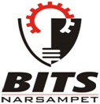
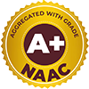

 
Balaji Institute of Technology & Sciences (BITS), Warangal was established in
2001 under Maheshwara
Educational Society.
It is affiliated to Jawaharlal Nehru Technical University (JNTU), Hyderabad and
approved by All India Council for Technical Education (AICTE), New Delhi.
Balaji Institute of Technology & Science is the one of the best Engineering College in Warangal district, popularly Known as BITS, was established by Maheshwara Educational Society in 2001 at Laknepally village near Narsampet beside Warangal-Narsampet Main Road in an area of 35 acres with an in take of 180 and the present intake is 1020. The place is well connected by road and is only 20 minutes drive from Warangal.